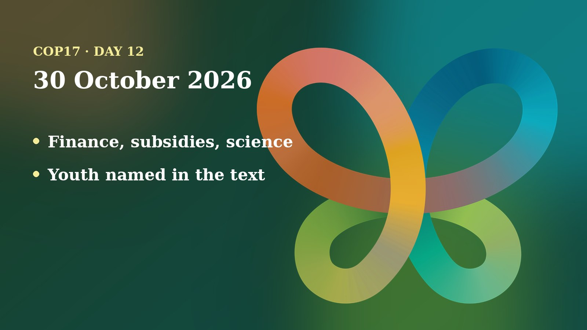

Friday, 30 October, was the last scheduled day of COP17. By the late evening in Yerevan I could read the morning plenary, two working-group sessions and a press conference, but I could not read a record of the closing plenary itself. So this post is about the final push, not the final result. Several texts were adopted. Others were still full of brackets, the signs of words that countries cannot yet agree on.
The day in negotiations
My main sources are the joint plenary, Working Group I and Working Group II records from UN Transcripts. They are automatic and unofficial, so some names and figures are garbled; I use only what looks consistent. The transcript of the closing plenary was not available when I checked, so what was finally adopted remains unconfirmed here.

Credentials first. Maldives, speaking for the Bureau, reported that 182 Parties were registered for COP17, of which 155 had sent fully compliant credentials, 8 were not fully compliant and 19 had sent none. The plenary approved the report without objection.
What the working groups reported. Gaute Hansen of Norway, chair of Working Group I, said it had met three times on 29 October and considered 11 items; ten draft texts had gone forward as "L documents" (texts ready for plenary adoption), some still bracketed. Sivantra Michael of Fiji, standing in for the ill chair of Working Group II, listed texts on synthetic biology, forests, protected areas, wildlife, marine biodiversity, agriculture and health moving forward, while the items on the climate-biodiversity link and the science panel IPBES were still open.
Adopted. The plenary adopted clean texts on making the Convention's processes more effective and on cities and local governments. It also adopted the capacity-building text after changes: the brackets around technology transfer were lifted, and a paragraph inviting climate bodies to cooperate was moved to the item on cooperation with other conventions. The Russian Federation used the moment to ask for shorter agendas and preambles. The Cartagena and Nagoya Protocol meetings each adopted their own text on meeting effectiveness.
Not adopted: the mainstreaming text. The sticking point was paragraph 6B, which refers to Target 18, the goal on harmful and helpful incentives. The President proposed deleting it. The UK, the EU (which wanted to add "including subsidies"), Canada, Colombia, Mexico, Iceland, Switzerland and Argentina wanted it kept. The Russian Federation said it was misplaced, and India called it a "red line". Brazil leaned toward deletion but offered compromise wording that developed countries lead. The President suspended the item and said it would return that evening.
Working Group I on finance. The group worked through the financial-mechanism text. It lifted brackets on language about Indigenous peoples and local communities in the project cycle and approved wording that a stocktake of the Global Biodiversity Framework Fund should "inform, but not prejudge" any permanent structure. A long argument ran over the word "all" in "all eligible country parties": the EU first resisted, then accepted it in two paragraphs, while Brazil, South Africa, the DRC and Russia wanted it used consistently. On the Global Environment Facility's ninth replenishment (GEF-9), the Chair added a footnote stating that initial pledges were 3.9 billion, after Kenya, South Africa and the DRC asked for the figure; the UK, the EU and Canada said it was not in the small-group outcome. Fiji, for the Pacific small island states, said it could not accept brackets on the package. The transcript ends before the outcome.
Working Group II. The IPBES text began with about 37 sets of brackets. The business-disclosure paragraph was settled by dropping the disputed wording on locations and disclosure. Brazil, citing that it could send only one delegate to IPBES meetings, kept brackets tied to a budget question. The UK said science should not be for sale. On climate, Pacific island states called welcoming an international court's advisory opinion a red line, while India, Russia and Sri Lanka wanted it deleted. The synthetic biology text went forward to plenary with brackets left on four paragraphs, including the precautionary approach. For protected areas, the Chair warned that, without a final text before 20:00 for translation, there would be no decision on this item at COP17; about 60 of 70 brackets were said to remain at one point.
Positions and stakeholders
Groups and countries named in the records spoke like this:
- Pacific small island states (through Fiji): wanted clean, un-bracketed finance text and strong "concern" wording about falling contributions; called the court opinion a red line.
- African voices (Kenya, South Africa, DRC, Nigeria and others): asked that pledge figures be recorded accurately and that agreed text not be reopened.
- European Union: accepted "all eligible" case by case, wanted "including subsidies" in the Target 18 paragraph, and resisted unclear synthetic-biology wording.
- Brazil: defended direct access to funds for Indigenous peoples and local communities, opposed "country platforms", and tied its IPBES position to the budget.
- Russian Federation, India, Saudi Arabia: pushed deletions, on the Target 18 paragraph and climate-related invitations.
- UK, Canada, Switzerland, Iceland, Colombia, Mexico, Argentina: backed keeping the Target 18 paragraph.
At a press conference, WWF said the global review shows implementation is too slow, that resource-mobilisation targets fall far short of the roughly 700 billion a year needed, and that Armenia's presidency produced initiatives such as the Yerevan Call on Positive Incentives. Euronews reported that the Yerevan Pathway package and the global review were still unfinished, that talks stalled on whether wealthy emerging economies should pay, and that Greenpeace's Irene Wabiwa called for concrete priorities. A Horizon Weekly report named finance and harmful subsidies as the main disagreements.
Beyond the halls, Armenpress reported that President Hambardzum Matevosyan thanked the conference volunteers, saying the 23 colours of the COP17 logo stand for the 23 targets of the Global Biodiversity Framework.
Numbers to know
- 182 / 155: Parties registered / Parties with compliant credentials (Bureau report to the plenary).
- About 37: sets of brackets at the start of the IPBES text; around 60 of 70 brackets on protected areas at one point (UN Transcripts records).
- 3.9 billion: initial GEF-9 pledges that the Chair's footnote records (UN Transcripts; currency not clear in the transcript).
- About 700 billion a year: the funding gap WWF cited; Euronews gives the same shortfall and says delegates aim to mobilise at least 200 billion a year by 2030.
- More than 1.8 billion: new funding announced during the summit, per the CBD Secretariat as reported by Euronews.
- About 10,000 against 1 billion a year: what the Cali Fund has raised against its goal, according to Euronews.
- About 10%: share of the ocean protected, against a 30% goal (WWF).
Through a child and youth lens
I follow this process as a member of the UNICEF Global Delegation, and I advocate for including children and young people in the CBD process. On the last day, the honest finding is that children were not mentioned in any of the records I read, and young people appeared only in a few lines of text.
Where youth did appear, it mattered. In the financial-mechanism text, one paragraph is about Indigenous peoples and local communities, women and youth taking part in the Global Environment Facility's work, and delegations argued over whether to say "full and effective" participation and how to refer to earlier decisions; Working Group I left three options in brackets. In the synthetic biology text, the invitation to use the action plan was agreed as clean and names women's and youth organisations among those invited. WWF's Sandra Valenzuela also listed youth among groups needing direct and easier access to finance.
The decisions that decide what young people inherit are the ones still stuck: Target 18 on harmful subsidies, the pledges and shortfall in nature finance, and the global review of progress toward 2030. Today's children will live in the world those numbers describe. I could not read whether any intergenerational language survived into the final package, so I will not guess.
On my calendar today
According to my COP17 schedule, I am scheduled to speak at the PechaKucha "BAZMAZAN: Living Armenia" on Armenia's biodiversity stories, organised with PK Yerevan, UNICEF and the Armenia Tree Project (ATP), on the Green Zone main stage from 13:35 to 16:00. I am also scheduled to co-host the ATP booth in the Blue Zone from 09:00 to 12:00 and again from 17:00 to 20:00. Booth hours do not block my calendar, so I am open to speaking requests.
What to watch tomorrow
- The closing outcome: which texts were adopted, whether the Target 18 paragraph survived, and what became of protected areas and the global review.
- Next host: Euronews expects a choice between Panama and Ecuador for the next biodiversity summit.
- Youth words in final texts: whether youth participation language in the finance and synthetic biology decisions was kept.
- Reports from official bodies: the CBD and the Earth Negotiations Bulletin, which I could not read today, for the authoritative record.
Follow where I am each day on my COP17 schedule, and the daily news in the Newsroom.
Sources
- Joint plenary (COP 17 / CP-MOP 12 / NP-MOP 6), automatic transcript (UN Transcripts, 30 Oct 2026). https://transcripts.un.org/en/asset/k16/k167fybcr2
- Working Group I, 9th meeting, automatic transcript (UN Transcripts, 30 Oct 2026). https://transcripts.un.org/en/asset/k1s/k1srbk14u5
- Working Group II, 14th and 15th meetings, automatic transcripts (UN Transcripts, 30 Oct 2026). https://transcripts.un.org/en/asset/k1k/k1kn35vf7u
- Press conference: What the emerging outcome means for biodiversity action, WWF, automatic transcript (UN Transcripts, 30 Oct 2026). https://transcripts.un.org/en/asset/k1z/k1z1cqyan2
- Nature recovery is falling behind. Can COP17 get global action back on track? (Euronews, 30 Oct 2026). https://www.euronews.com/2026/10/30/nature-recovery-is-falling-behind-can-cop17-get-global-action-back-on-track
- COP17 enters final negotiations in Yerevan as major international disagreements persist (Horizon Weekly, 30 Oct 2026). https://horizonweekly.ca/en/cop17-enters-final-negotiations-in-yerevan-as-major-international-disagreements-persist/
- Hambardzum Matevosyan thanks COP17 volunteers (Armenpress, 30 Oct 2026). https://armenpress.am/en/article/1264376